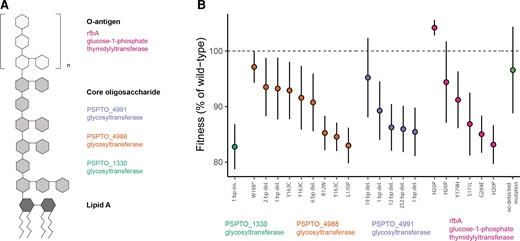
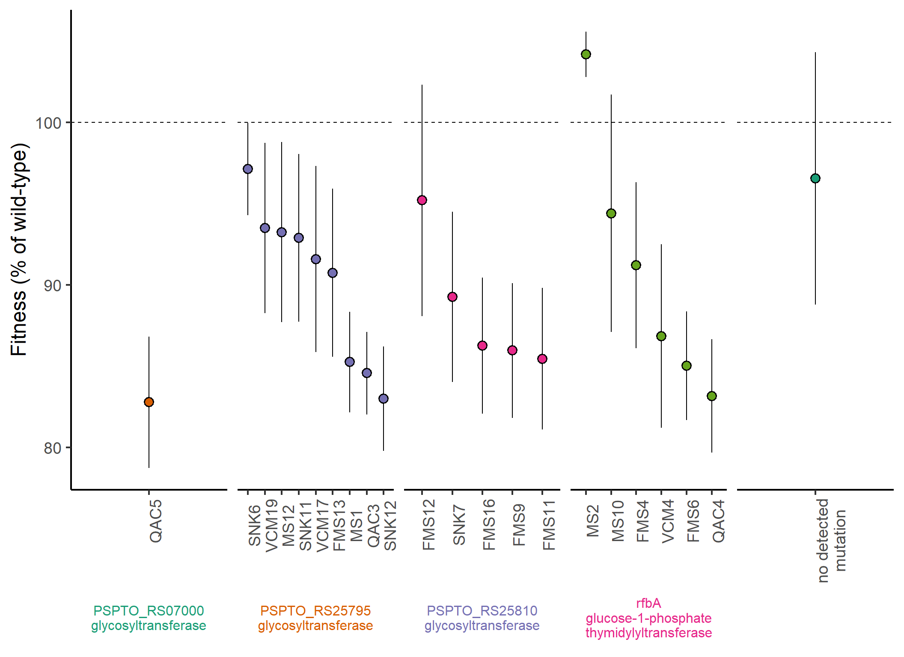

library(growthrates) # fit_growthmodel(): Calcular la tasa de crecimiento a partir de datos de microplacas.
library(lmerTest) # Pruebas estadisticas
# Paquetes adicionales (no los mencionan pero son necesarios)
library(readxl) # lectura de archivos de excel
library(tidyverse) # Manipulacion de datos
library(reshape2) # melt(): reduccion de datos
library(ggh4x) # paquete que extiende las funcionalidades de facet_wrap y facet_grid
library(RColorBrewer) # Paquete para asignar paleta de coloresFigura 1
Análisis de genomas bacterianos evolucionados en ausencia de fagos
NOTA: Agregar el diagrama con descripcion del analisis.

Figure 1B. La resistencia es costosa
Paquetes
NOTA: La funcion
fit_growthmodel(), toma los datos de la siguiente forma: cada fila es la medida de un único pocillo en un único punto temporal, con columnas adicionales «Tratamiento» y «DO». Se ajusta una curva logística a cada pocillo por separado utilizando la DO a lo largo del tiempo. He utilizado los siguientes parámetros: lower=c(y0=0.000001,mumax=0,K=0),upper=c(y0=0.05,mumax=5,K=1.5)),p=c(y0=0.01,mumax=0.2,K=0.1)
GC_long_to_growthrates() function
#' @title Calcular tasas de crecimiento
#' @description
#' Esta función procesa los datos de crecimiento de un experimento en múltiples pozos, ajusta un modelo logístico de
#' crecimiento para cada pozo, y extrae la tasa de crecimiento r.
#' @author Reena Debray
#'
#' @param GC_long # Un data frame en formato largo que contiene los datos de crecimiento.
#' @param lower # Un vector de límites inferiores para los parámetros del modelo de crecimiento.
#' @param upper # Un vector de límites superiores para los parámetros del modelo de crecimiento.
#' @param p # Un vector de parámetros iniciales para el ajuste del modelo.
#'
#' @return # El resultado es un data frame con las tasas de crecimiento para cada combinación de pozo y tratamiento.
#' \item{well}{The identifier of the well.}
#' \item{treatment}{The treatment associated with the well.}
#' \item{r}{The growth rate obtained from the fitted logistic model.}
#'
#' @import growthrates
#' @import lmerTest
#'
#' @export
#'
#' @examples
#' # Example data
#' GC_long <- data.frame(
#' Well = rep(c("A1", "A2"), each = 10),
#' Time = rep(1:10, 2),
#' OD = runif(20),
#' Treatment = rep(c("Control", "Treatment"), each = 10)
#' )
#'
#' # Parameters for the logistic model
#' lower <- c(y0 = 0.000001, mumax = 0, K = 0)
#' upper <- c(y0 = 0.05, mumax = 5, K = 1.5)
#' p <- c(y0 = 0.01, mumax = 0.2, K = 0.1)
#'
#' # Calculate growth rates
#' growth_rates <- GC_long_to_growthrates(GC_long, lower, upper, p)
#' print(growth_rates)
GC_long_to_growthrates <- function(GC_long, lower, upper, p){
### initialize data frame / Iniciar dataframe
# Objeto donde se almacenarán las tasas de crecimiento calculadas
growthrates<-data.frame(matrix(nrow=0, ncol=3))
# Populate with model fit / Rellenar con el ajuste del modelo
# Argumentos:
# `treatment`: Para cada pozo, se extrae el tratamiento asociado a partir de la columna Treatment.
# Modelo de crecimiento: Se ajusta un modelo de crecimiento logístico (especificado por `grow_logistic`) a los datos de tiempo (`Time`)
# y densidad óptica (`OD`) para el pozo actual.
# `r`: Se extrae el coeficiente de crecimiento (r) del modelo ajustado usando coef, y se convierte a un número con as.numeric.
# Agregar a growthrates: Se añade una nueva fila al data frame growthrates que contiene el pozo (well),
# el tratamiento (treatment) y la tasa de crecimiento (r).
for (well in unique(GC_long$Well)){
treatment <- GC_long[GC_long$Well == well,"Treatment"][1]
r <- as.numeric(coef(fit_growthmodel(FUN = grow_logistic, GC_long[GC_long$Well==well,"Time"], GC_long[GC_long$Well==well,"OD"],p=p,lower=lower,upper=upper))[2])
# Cambiar formato a numerico
growthrates <- rbind(growthrates,c(well,treatment,r))
}
### Return output
colnames(growthrates)=c("well","treatment","r")
growthrates$r <- as.numeric(growthrates$r)
return(growthrates)
}Cargar datos
Cargar informacion de “Costs_of_Res.xlsx” como variable costs_of_res
costs_of_res <- read_excel("data/Costs_of_Res.xlsx")Resistencia del fago y la disposición de la placa
Calcular los valores ajustados controlando la resistencia del fago y la disposición de la placa. Expresar los valores ajustados como porcentaje de la aptitud de tipo wild-type.
costs_of_res$fitted <- fitted.values(lm(r~(Population=="ancDC3000") + Column + Plate,costs_of_res))
costs_of_res$fitted_percWT <- costs_of_res$fitted/mean(unlist(costs_of_res[costs_of_res$Population=="ancDC3000","fitted"]))*100Reordenar los aislados por gen de resistencia y tasa de crecimiento.
costs_of_res<-costs_of_res[order(costs_of_res$Gene,-costs_of_res$r),]Coloque el aislado sin diferencias genéticas detectadas en la parte derecha del gráfico.
costs_of_res[costs_of_res$Population=="MS15","Gene"] <- "Z"
costs_of_res[costs_of_res$Population=="MS15","Annotation"] <- "Z"
costs_of_res$order<-seq(1,nrow(costs_of_res))Las bacterias resistentes crecen más despacio que sus antepasadas sensibles
costs_of_res_R<-costs_of_res[costs_of_res$Population!="ancDC3000",]
costs_agg<-aggregate(costs_of_res_R$fitted_percWT,by=list(costs_of_res_R$Population,costs_of_res_R$Gene),FUN=mean)
colnames(costs_agg)<-c("Population","Gene","fitted_percWT")
t.test(x = costs_agg$fitted_percWT,mu = 100,alternative = "less")
One Sample t-test
data: costs_agg$fitted_percWT
t = -8.4049, df = 21, p-value = 1.849e-08
alternative hypothesis: true mean is less than 100
95 percent confidence interval:
-Inf 91.98815
sample estimates:
mean of x
89.92562 # La variación en las tasas de crecimiento no se explica por el gen de resistencia (excluir la población sin mutaciones detectadas)
anova(lm(fitted_percWT~Gene,costs_agg[costs_agg$Population!="MS15",]))Analysis of Variance Table
Response: fitted_percWT
Df Sum Sq Mean Sq F value Pr(>F)
Gene 3 65.56 21.854 0.6731 0.5802
Residuals 17 551.95 32.468 Salvar variable para la figura 2.
save(costs_agg, file = "costs_agg.RData")Grafica
Tasas de crecimiento de la población de cepas resistentes en ausencia de fago, basadas en un modelo logístico ajustado a una curva de crecimiento de 40 h (n = 22 cepas).
# Asignar colores a los titulos de los facets
strip <- strip_themed(text_x = elem_list_text(color = brewer.pal(5, "Dark2")))
# Guardar las etiquetas que van en los títulos de los facets
strip_label <- distinct(costs_of_res[,c("Gene","Annotation")])[-c(1:2),] %>%
mutate(Annotation = str_replace(Annotation, "_","\n"),label = paste(Gene,Annotation, sep = "\n"))
costs_of_res[costs_of_res$Population!="ancDC3000",] %>% # El siguiente paso quita las Z que asignamos antes y más bien asigna el orden utilizando niveles en el factor de label
mutate(Population = ifelse(Population == "MS15","no detected\nmutation",Population),
Gene = ifelse(Gene == "Z","",Gene),
Annotation = ifelse(Annotation == "Z","",Annotation),
Annotation = str_replace(Annotation, "_","\n"),
label = paste(Gene,Annotation, sep = "\n")) %>%
mutate(label = factor(label, levels = c(strip_label$label,"\n"))) %>%
ggplot()+
stat_summary(aes(x = reorder(Population,-fitted_percWT),
y = fitted_percWT,
group=Population,
fill=Gene),
geom="pointrange",
shape=21,
size=0.8)+
geom_hline(yintercept=100,linetype="dashed")+
scale_fill_brewer(palette="Dark2")+
guides(fill=F)+
ylab("Fitness (% of wild-type)")+
facet_wrap2(~label,
scales="free_x",
#space="free_x",
strip.position = "bottom",
nrow = 1,
strip = strip
)+
theme_classic(base_size=18)+
theme(axis.title.x=element_blank(),
axis.text.x=element_text(angle = 90),
#axis.ticks.x=element_blank(),
strip.background = element_blank(),
strip.placement = "outside",
strip.text = element_text(size = 12))